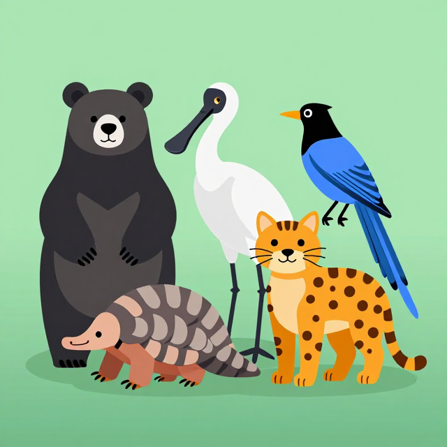

消失的大朋友
恐龍住在哪裡?為什麼牠們不見了?
起點
你看過真的恐龍嗎?
1
恐龍住在哪裡?2
為什麼現在沒有恐龍了?3
我們可以做什麼,讓現在的動物不要也不見?今天我們要當小小科學家,一起找答案!
活動一
恐龍住在好久好久以前
用超長彩帶看時間
活動一・步驟 2
恐龍住在好久好久以前
恐龍與小鳥對比圖
比較圖
恐龍住在好久好久以前
資料來源:英文維基百科 — 白堊紀–古近紀滅絕事件
活動一・步驟 3
超長彩帶:恐龍玩了 1 億 4 千萬年!
時間軸彩帶 — 恐龍佔大段、人類佔末端一小點
概念整理圖
超長彩帶:恐龍玩了 1 億 4 千萬年!
資料來源:中文維基百科 — 恐龍
活動二
恐龍為什麼不見了?
大石頭、變冷、食物變少
活動二・步驟 1
大石頭從天上掉下來
小行星撞地球溫和示意圖
概念整理圖
大石頭從天上掉下來
活動二・步驟 2
糖果剩下幾顆?
4 顆糖果 → 拿走 3 顆 → 剩 1 顆
流程鏈圖
糖果剩下幾顆?
資料來源:英文維基百科 — 白堊紀–古近紀滅絕事件
活動二・步驟 3 ・學習單(投影版)
化石小偵探配對
把化石圖片和恐龍圖片連在一起。
| 化石長這樣 | 連連看 | 恐龍的名字 |
|---|---|---|
| 大尖牙骨頭 | 暴龍 🦖 | |
| 三隻角的頭骨 | 三角龍 | |
| 翅膀骨頭 | 翼手龍 | |
| 長長脖子骨頭 | 梁龍 |
觀察題:你最喜歡哪一隻恐龍?牠住在哪裡?
完整互動版見 worksheet.html
活動三
我來照顧現在的動物朋友
臺灣黑熊、黑面琵鷺需要我們
活動三・步驟 1
臺灣的動物朋友
臺灣 5 種動物拼貼圖
概念整理圖

臺灣的動物朋友
資料來源:行政院農業部生物多樣性研究所 / 教育部環境教育教案
活動三・步驟 2 ・學習單(投影版)
我來蓋一個動物的家
用黏土加紙盒,做一隻恐龍或一隻臺灣動物加上牠的家。
- 我做的動物名字是 ____________
- 牠住在 ____________(山上 / 海邊 / 樹上 / 草原 / 森林)
- 牠最喜歡吃 ____________
- 牠的家裡需要 ____________(水 / 食物 / 樹 / 安全的地方)
提問:如果我們把牠的家弄壞了,牠會去哪裡?
完整互動版見 worksheet.html
活動三・步驟 3 ・學習單(投影版)
給臺灣黑熊的紀念卡
🐻 親愛的臺灣黑熊
謝謝你住在臺灣!
為了你,我會做的事是:
✏️ 在這裡畫一張黑熊圖
我的名字:
總結
三個關鍵字,小科學家一起記住
第 1 個
很久
恐龍是 6,600 萬年前的
大朋友,現在不見了
大朋友,現在不見了
第 2 個
原因
大石頭、變冷、食物少
家不見了動物就消失
家不見了動物就消失
第 3 個
照顧
臺灣黑熊還在!
我們可以做小事保護牠
我們可以做小事保護牠
每一種動物都是地球的好朋友。